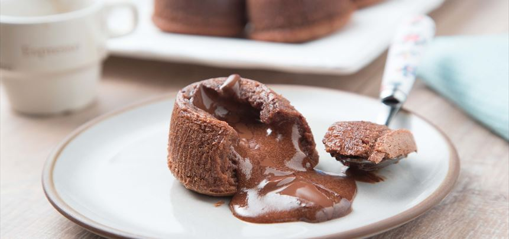

Chocolate Coulant

Chocolate volcano.
Ingredients
- 4 eggs
- 100 gr. sugar
- 40 gr. Of flour
- 2 tablespoons of cocoa powder
- 200 gr. chocolate for desserts
- 80 gr. of butter
Steps
- To prepare the chocolate coulant, we will start by putting the oven to heat to 180ºC, heat up and down.
- In a bowl we put the butter and chocolate, in another the eggs and sugar.
- Put the chocolate and butter in the microwave or we can melt it in a bain-marie, on the other hand we beat the sugar and eggs with the rods.
- Add the sifted flour and mix little by little.
- In this mixture we will put the chocolate that we have melted together with the butter and cocoa powder.
- Mix with a spatula with enveloping movements, little by little until all the chocolate is well mixed.
- Prepare some molds and spread them with a little butter.
- Fill the molds filling them ¾ parts of their capacity, as they rise.
- Put the molds in the oven for 7 minutes, look at the upper part of the coulant, when you see them without the chocolate shine they are ready.
- Remove them from the oven, we remove them from the molds very carefully and serve hot.